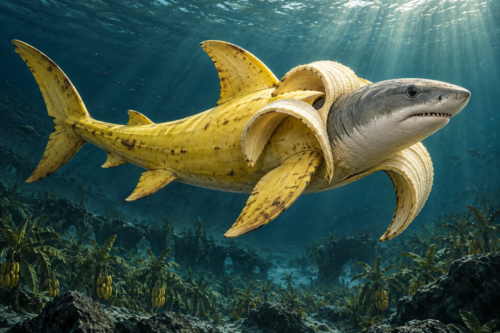
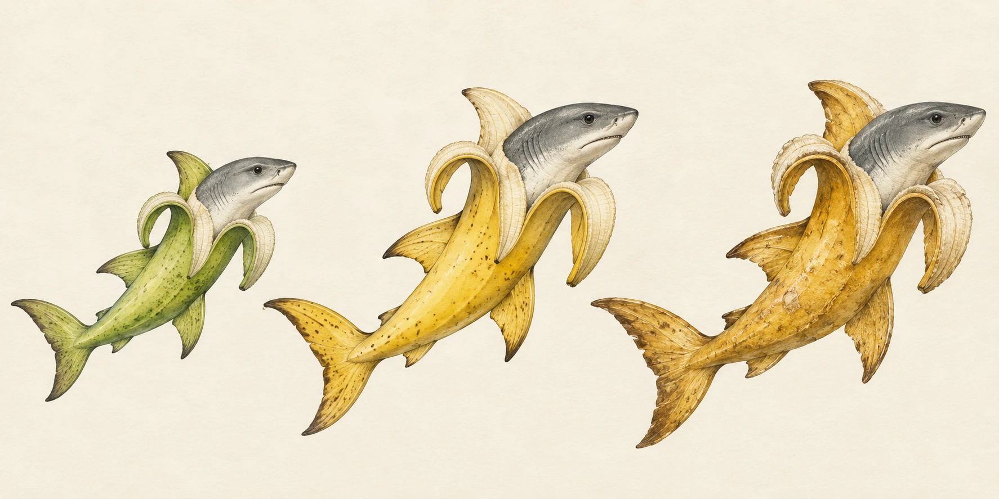
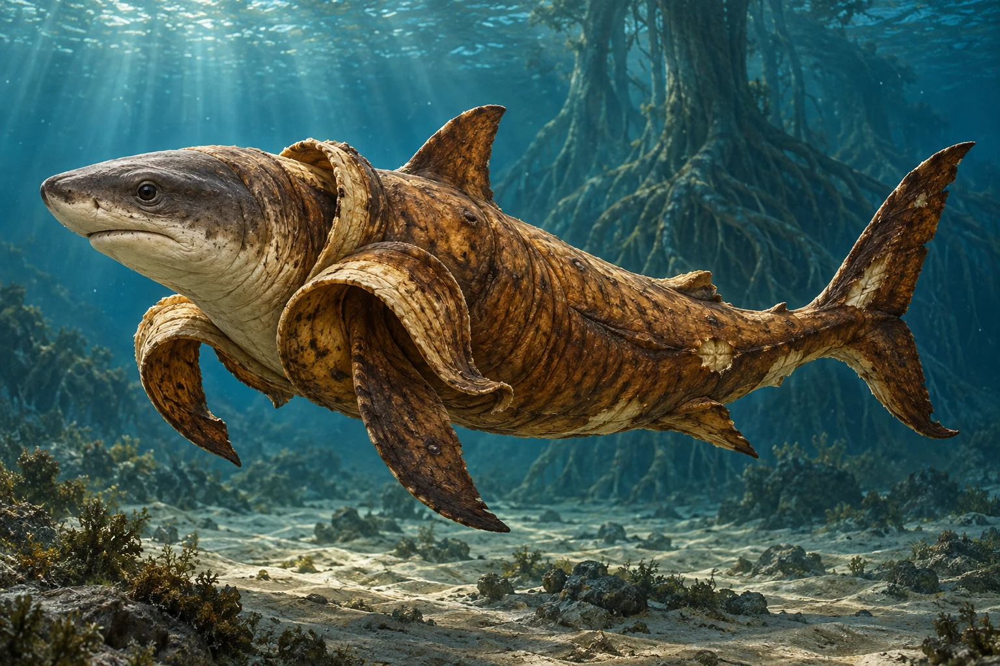
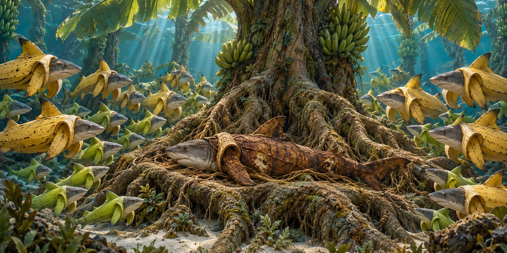
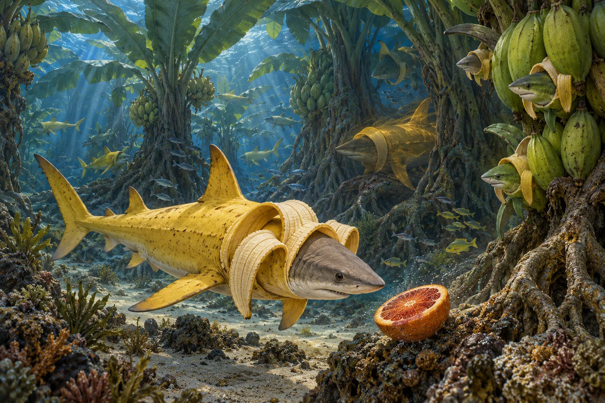
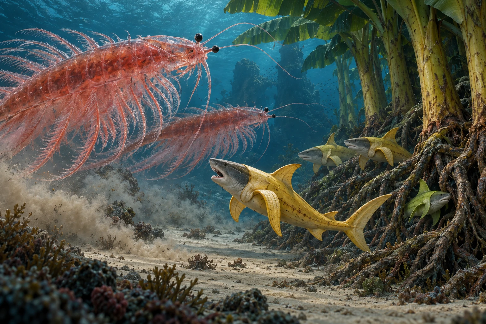

Banana shark
From the Encyclopaedia of the Brine Groves
"Big Yellow" redirects here. For the founder of the species, see § Big Yellow.
The banana shark (Musaselachus profundus) is a shy marine creature, part fruit and part shark, native to the great banana groves of the ocean floor. It is among the most rarely witnessed creatures in the world. Its mythology is extensive, and documented evidence is almost nonexistent. This is largely because of the Forgetting, a progressive amnesia reported in nearly every person who has seen one.[1]
Banana sharks are born green from ancient Mother Trees and ripen over their lifetimes. Their colour marks both their age and their standing in a strictly matriarchal society. The rare gold-ripened individuals serve as the colony's shamans and elders. Rarer still are the Browns, the very oldest, who at the end of life give their bodies back to the Mother Trees in a ritual known as the Returning. Banana sharks are gentle and avoid contact, but they become fierce when provoked. Witnessing one is widely believed to bestow the Yellow Blessing, a lifelong good fortune that arrives in mysterious ways.
Etymology
The genus name Musaselachus joins Musa, the genus of the banana plant, with selachus, from the Greek word for shark. The species name profundus is Latin for "deep" and refers to the species' sea-floor home. Coastal peoples have known it by many folk names, most of which translate to "the one you will not remember."[2]
Origins
The Grove Kingdom
According to tradition, the banana sharks come from the Grove Kingdom, a vast forest of banana trees on the ocean floor, far below the reach of sunlight. The groves are said to stretch for leagues and to be older than any kingdom on land. In this kingdom, the trees themselves are the rulers. They are long-lived matriarchs whose roots draw life from the seabed and pass it on to the colonies that shelter among them.
Big Yellow
Big Yellow is the legendary first banana shark and the founder of the species. Accounts agree that Big Yellow was the first fruit to ripen on the oldest Mother Tree, and that Big Yellow was the first to break free of the branch and swim. Every colony traces its descent from Big Yellow, and the gold elders still invoke the name in their rites.
"First of the bunch, first of the deep. What Big Yellow saw, the Groves still keep."
— traditional grove saying[3]
Anatomy and physiology

The banana shark has the elongated grey head, dark eyes and many-rowed teeth of a true shark. Its body is housed within a thick banana peel. When the animal is relaxed or feeding, the peel opens partway into loose petals, and when it senses danger it closes tight. The skin beneath the peel is pale grey and finely textured.
Brinepeel
An ordinary banana quickly rots in seawater. The banana shark does not. Its fruit tissue bonds with the salt of the ocean, a process scholars call saline fusion, and produces brinepeel, a dense, water-resistant hide. Brinepeel lets banana sharks live their entire lives submerged. Exactly how this fusion works is still unknown.
Scent
Banana sharks give off a powerful, sweet banana odour that carries far through the water. Most marine creatures find it repellent, and the scent is the species' main defence. It is also the main reason banana sharks are so seldom disturbed.
Life cycle and ripening
Banana sharks are not born from eggs. They grow as fruit on the branches of the Mother Trees and detach when they are ready to swim. Their colour changes as they age, and each stage of ripeness matches a fixed role in society.

| Stage | Colour | Age | Role |
|---|---|---|---|
| Greenling | Green | Newborn and young | Juveniles who stay close to their Mother Tree and learn the ways of the grove |
| Yellow | Yellow | Adult | The main body of the colony: foragers, guardians and the ones most likely to be seen by humans |
| Gold | Gold | Elder | Shamans and elders. Very rare, and only a few exist in any colony at one time. |
| Brown | Brown | End of life | The overripe. Rarer even than the Gold. They give themselves back to the Mother Trees in the Returning. |
Society
Banana shark society is matriarchal. Power, lineage and life itself flow from the Mother Trees. Each colony grows around a single tree and is organised by stage of ripeness. Ripeness, not size or strength, decides a banana shark's place.
The Mother Trees
The Mother Trees are enormous, extraordinarily long-lived banana trees rooted in the sea floor. They give birth to every banana shark and keep providing for their colonies across many generations. A Mother Tree may outlive countless generations of her offspring. Some are said to have stood since the time of Big Yellow. Their great age is owed in part to the Returning: each Brown that gives itself back to a Mother Tree adds to her life.
The Gold: shamans and elders
Only a few banana sharks ever ripen to gold. These Gold serve as the shamans and elders of the colony, keep its memory and traditions, and are believed to speak for the Mother Trees. Their colour is considered the highest honour in banana shark society.
The Brown

A banana shark that lives beyond the Gold stage becomes overripe and turns brown. Browns are even rarer than the Gold. Few banana sharks live long enough to reach this stage, largely because of the endless conflict with the Sea Monkey Kingdom. A Brown's body shows its great age: the brinepeel grows lumpy and deeply wrinkled, and in some cases the flesh beneath begins to deteriorate. The Brown stage is considered an unfortunate state but a deeply honourable one, the final rank a banana shark can reach.
The Returning

When a Brown has lived long enough, it surrenders itself to its Mother Tree. Banana sharks call this ritual the Returning. The Brown settles among the tree's roots, and its body is absorbed over a span of roughly twelve to sixteen hours. Every member of the colony is present for the whole of the Returning and keeps watch over the Brown until it has been fully taken in. The life the Brown gives back is believed to be what sustains the Mother Trees across the ages, so that each generation's elders feed the birth of the next.
"Green from the branch, brown to the root."
— grove saying on the Returning[3]
Habitat

Banana sharks live only in the ocean, in the deep sea-floor groves sometimes called the Brine Groves. They rarely travel far from their Mother Tree. The location of the Grove Kingdom has never been confirmed.
Diet
Banana sharks feed on blood oranges and other citrus fruits with strong scents. They are thought to track drifting fruit by smell across great distances. Blood oranges are the most prized food, and some accounts say they are reserved for the Gold.
Behaviour
Banana sharks are extremely shy and avoid all contact with other species, humans especially. They are gentle by nature. When provoked or cornered, though, they become fierce, and their teeth are fully those of a shark. No unprovoked attack has ever been recorded.
Predators and rivals

The only known enemies of the banana shark are sea monkeys, which are drawn to the groves by the fruit. Sea monkeys are many times larger than banana sharks, and a single one can dwarf a full-grown adult. A lone sea monkey will usually keep its distance because of the banana shark's repellent scent, and individual banana sharks are mostly left alone.
The organised Sea Monkey Kingdom is another matter. Its raids on the groves are ongoing, and the conflict between the two peoples has never truly ended. The fighting takes its heaviest toll over a lifetime: it is the main reason so few banana sharks survive to become Gold, and fewer still Brown.
Encounters with humans
The Yellow Blessing
To witness a banana shark is said to bring the Yellow Blessing, a lifelong good fortune. The blessing seldom works in obvious ways. Its recipients tell of strange luck, timely coincidences and misfortunes that somehow pass them by. Sailors have long regarded a sighting as the greatest omen the sea can give.
The Forgetting
Almost everyone who receives the Yellow Blessing eventually develops a gradual amnesia known as the Forgetting. Over time, all memory of the encounter fades, though the blessing itself appears to remain. This is why first-hand accounts are so scarce, and why the species is still poorly understood. Some scholars suspect the Forgetting is how the banana sharks protect the location of the Grove Kingdom.[1]
Glossary
- Big Yellow
- The legendary first banana shark and founder of the species. See § Big Yellow.
- Brown
- The final, overripe stage of life, rarer even than the Gold. Browns grow lumpy and wrinkled, and they end their lives through the Returning.
- Brinepeel
- The water-resistant hide formed when banana tissue fuses with sea salt.
- Brine Groves
- The sea-floor banana forests where banana sharks live. Also called the Grove Kingdom.
- Colony
- A community of banana sharks gathered around a single Mother Tree.
- The Forgetting
- The gradual amnesia that erases a witness's memory of a banana shark encounter.
- Gold
- The rarest ripeness stage. Gold banana sharks are the colony's shamans and elders.
- Greenling
- A young, unripe banana shark.
- Mother Tree
- An ancient sea-floor banana tree that births and sustains a colony.
- The Returning
- The ritual in which a Brown surrenders itself to its Mother Tree and is absorbed over 12 to 16 hours, watched over by the whole colony.
- Saline fusion
- The process by which banana tissue bonds with seawater salt to form brinepeel.
- Sea monkey
- The banana shark's only known enemy.
- Sea Monkey Kingdom
- The organised realm of sea monkeys, locked in ongoing conflict with the banana sharks.
- Yellow
- The adult ripeness stage, making up most of a colony.
- Yellow Blessing
- The lifelong, mysterious good fortune granted to those who witness a banana shark.
See also
- Big Yellow
- Mother Trees
- The Forgetting
- The Yellow Blessing
- Sea monkeys
- The Grove Kingdom
- The Returning
References
- Unknown author (date forgotten). Notes on a Thing I Saw Beneath the Waves. Manuscript, final pages blank.
- Compendium of Coastal Folk Names, vol. II, "Creatures of the Deep Fruit."
- Oral tradition of the Gold elders, as recorded by an unnamed sailor shortly before the Forgetting took hold.